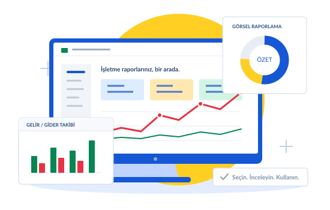

İşiniz ilerlesin.Tablonuz hazır.
Finans, stok, personel ve satış takibi için hazır Excel şablonları. Doğru tabloyu bulun, detaylarını inceleyin, kendi işinize uyarlayın.

Temsili illüstrasyon · Gerçek ürün görsellerini aşağıda inceleyebilirsiniz.
Hangi işiniz için bir tablo gerekiyor?
Tüm kategoriler →Günlük işler, pratik çözümler.
Kasa, stok, personel ve fatura takibi. Her program ayrı ayrı 999 TL.
Fiyatlar ürün başınadır. Kapsam, uyumluluk ve lisans bilgileri ürün detayındadır.
Finansınıza daha net bakın.
Nakit planlama, kredi takibi ve yönetici raporları bir arada.
Banka, Kredi ve Taksit Takibi
Banka hesaplarınızı ve yaklaşan kredi taksitlerini tek yerde izleyin.
Aylık Patron Finans Paneli
İşletmenizin aylık finansal görünümünü tek panoda değerlendirin.
Verilerinize renk katın.
Rapor ve sunumlarınız için dinamik, dikkat çekici grafik şablonları.
Hedef Göstergeli Çubuk Grafik
Hedef ve gerçekleşen değerleri aynı grafik üzerinde karşılaştırın.
İş akışınıza uyan bir Excel sistemi.
Hazır tabloların ötesine geçin. Mevcut dosyalarınız ve ihtiyacınız üzerinden size özel bir yapı planlayalım.
Özel çözümleri keşfedinAradığınız çözümü netleştirelim.
“Şu işi takip etmek istiyorum” demeniz yeterli. İhtiyacınıza uygun ürünleri birlikte değerlendirelim.
Bana uygun tabloyu bulİlk adımı kolaylaştıralım.
Uyumluluk, lisans ve teslimat hakkında kısa, açık cevaplar.
Bütün soruları görBu tabloları kullanmak için uzman olmam gerekir mi?
Temel Excel bilgisiyle başlayabilirsiniz. Ürünün kapsamını ve kullanım gereksinimlerini detay sayfasında inceleyin; kurumsal modellerde ücretsiz demoyla yapıyı test edin.
Mac veya eski Excel sürümünde çalışır mı?
Uyumluluk ürüne göre değişir. Gerekli Excel sürümü, makro durumu ve Mac uyumluluğu ürünün teknik bilgilerinde ayrı ayrı gösterilir.
999 TL bütün programların fiyatı mı?
999 TL, pratik programlarda ürün başına fiyattır. Paket fiyatı değildir. Kurumsal modellerin fiyatı her ürünün kendi detayında belirtilir.
Ödeme ve dosya indirme nasıl gerçekleşir?
Satın alma bağlantısı mevcut ürünün ödeme sayfasına yönlendirir. Sipariş doğrulama ve indirme işlemleri ExcelArşiv’in mevcut teslimat sistemi üzerinden devam eder. Lisans ve teslimat koşullarını satın almadan önce inceleyin.